Online User Help¶
The GSDM web interface is the primary method of interacting with GSDM as a user. From this interface, view existing soil maps, carry out sampling design, local map adaptation and download outputs.
Navigate to the GSDM home page (online website available here):

Home page
This page shows description information about the GSDM application including the features provided. The satellite basemap is centered on sub-saharan Africa.
Open navigation menu.

The drop-down menu on the top-left corner provides links to open the different panels on the application.
Open the Tools panel.
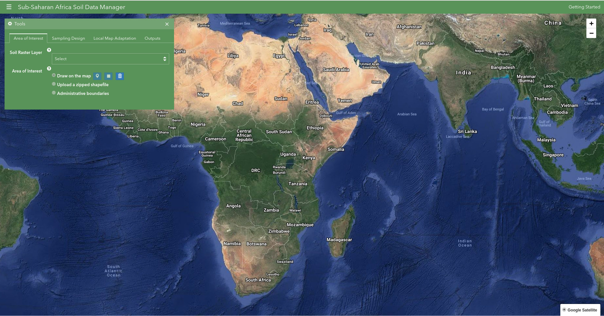The Tools panel is accessed by clicking on the Tools link from the navigation menu. The Tools panel is organized into separate tabs to enable users carry out different tasks. By default the Area of Interest tab is active.
Select Soil Raster Layer.
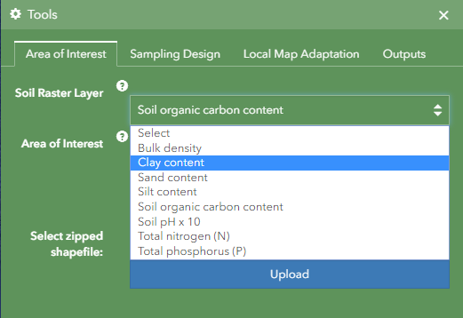The drop-down list contains the soil maps available in the application, a user can select one to view and use as a background map.
View Soil Raster Layer.
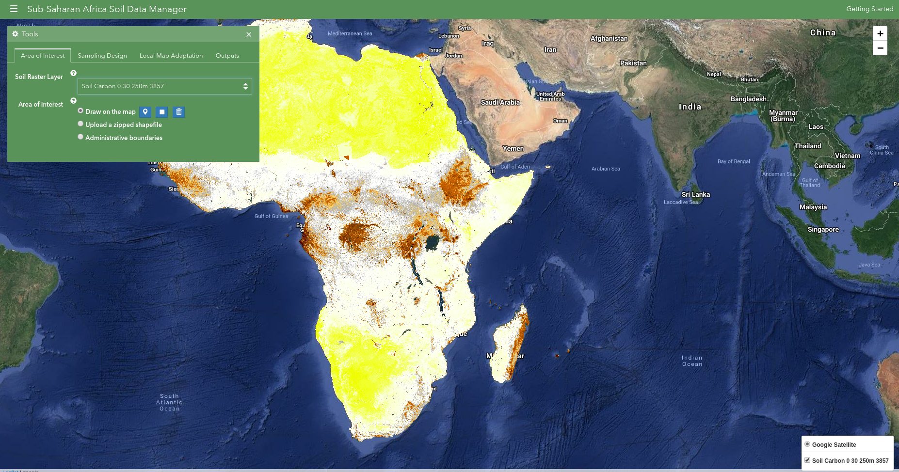The selected layer will be loaded on top of the base map for visualization.
Draw Area of Interest

Draw Polygon tool
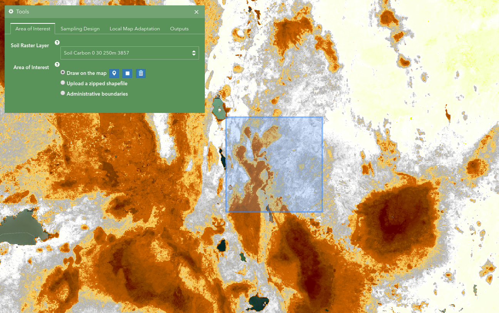Draw Rectangle tool
An area of interest can be drawn by selecting either the polygon or rectangle butttons and drawing on top of the raster layer. A drawn feature can be deleted by clicking the delete button. The draw buttons are active when the draw on the map option is selected.
Upload a zipped shapefile
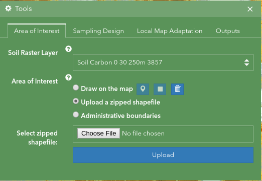Uploader
The Upload menu is activated when the Upload a zipped shapefile option os selected. A zip file containing all the shapefile extensions of the Area of Interest can be selected by clicking on the Choose File button. All user submitted data must be in EPSG:4326 projection with lat/long coordinates.
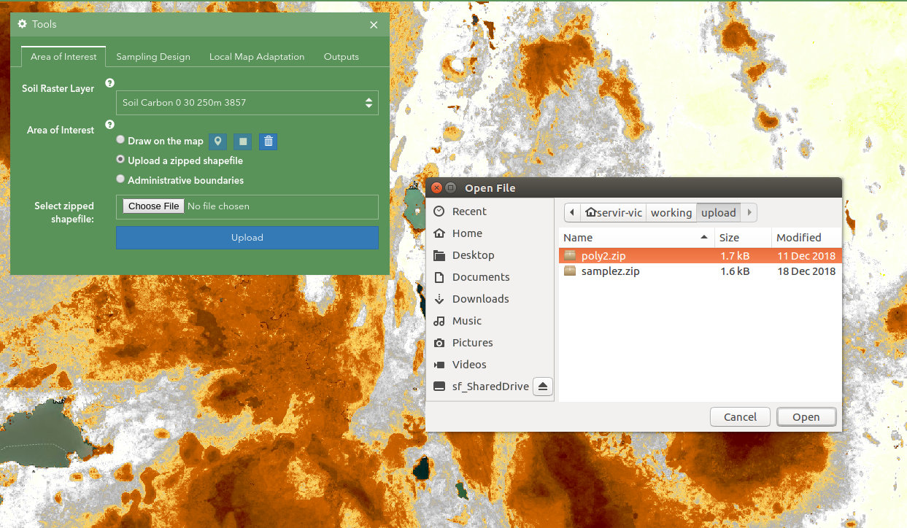The Open File window enables selection of a file.
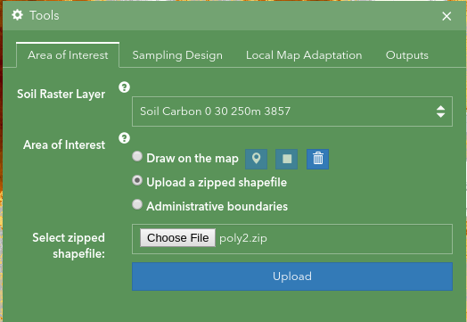File selected
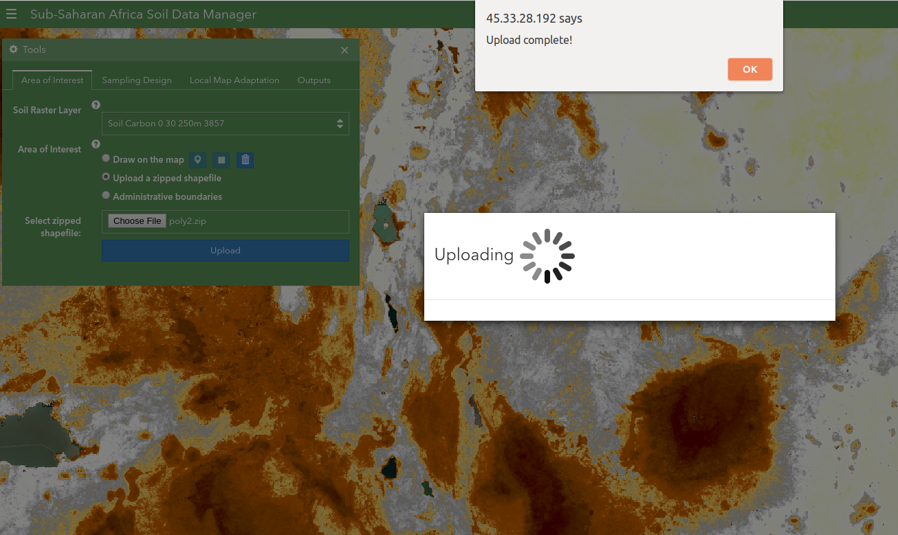After selecting file, click on Upload button to upload. A Upload Complete message will alert a user when the upload operation is successful.
View uploaded Area of Interest

Select Administrative boundaries
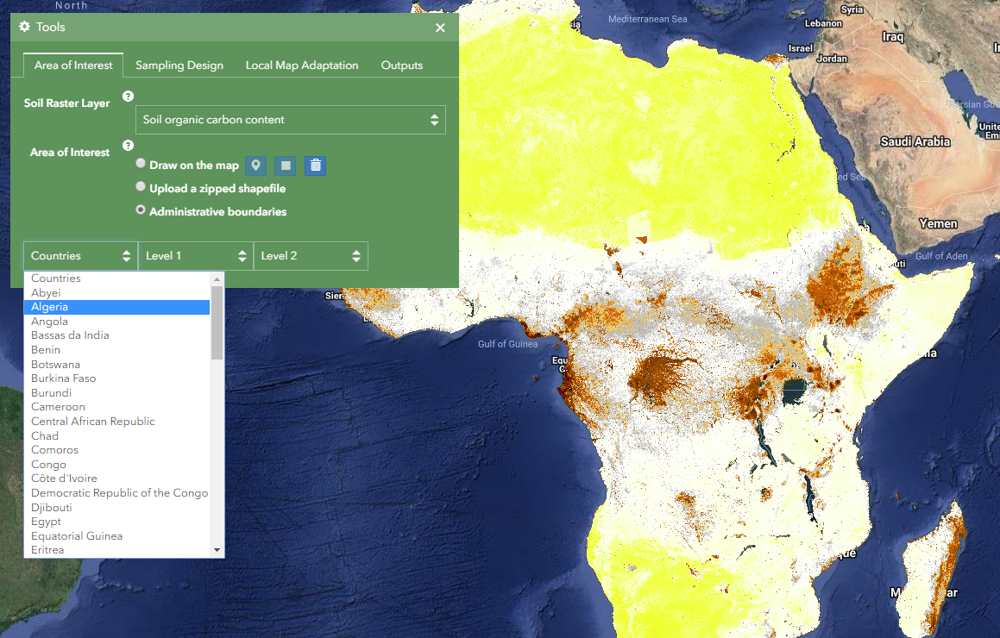The global administrative boundaries drop-down lists are enabled when the Administrative boundaries option is selected.
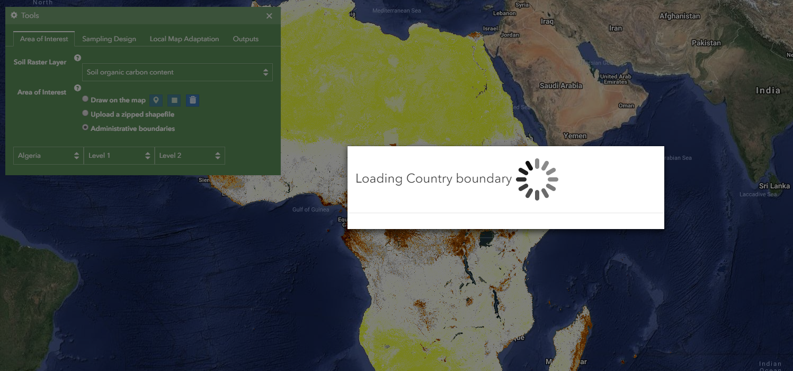Boundary loading alert

Once an admistrative boundary is selected, it will be loaded on the map and lower levels enabled for selection.
Sampling Design

Sampling Design options are activated after selecting the Soil Raster Layer and Area of Interest.

Process Running

Process complete
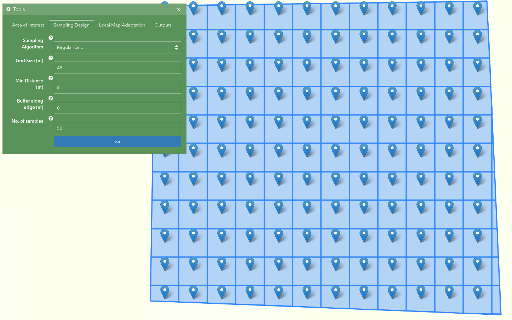Sampling design results
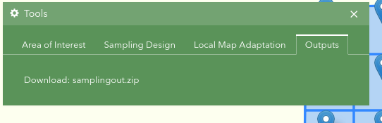Results download link
Local Map Adaptation

Local Map Adaptation options

Select sample data
All user submitted data must be in EPSG:4326 projection with lat/long coordinates.
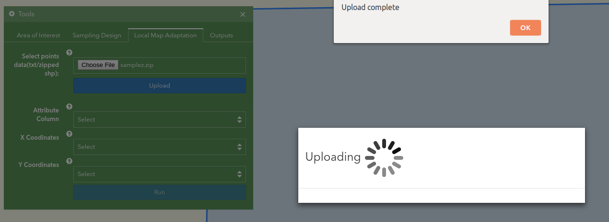Upload complete

View uploaded data
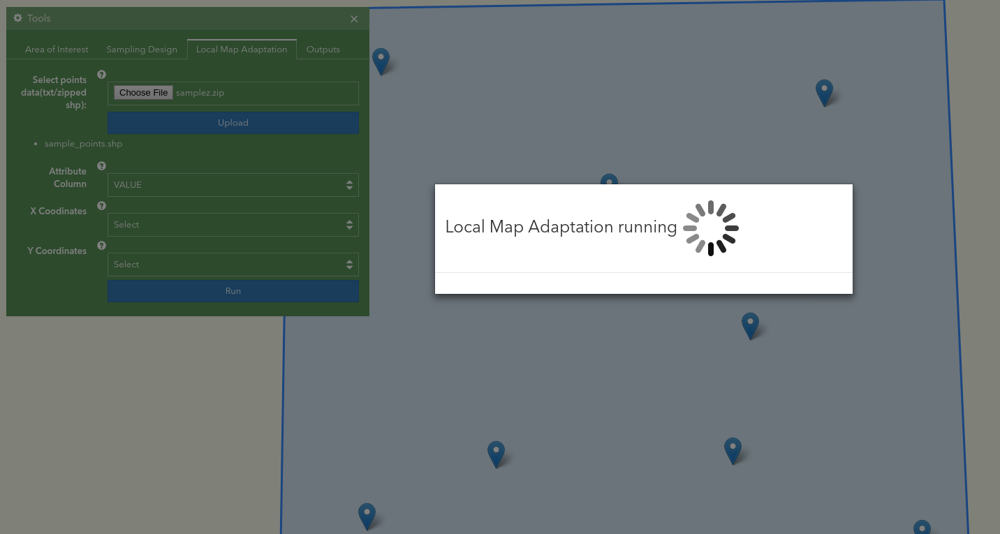Process running
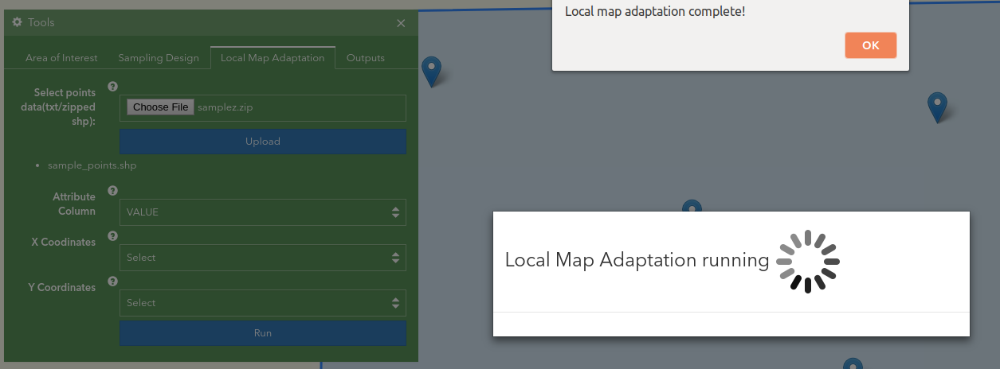Process complete

Feedback

Evaluation

Results download link